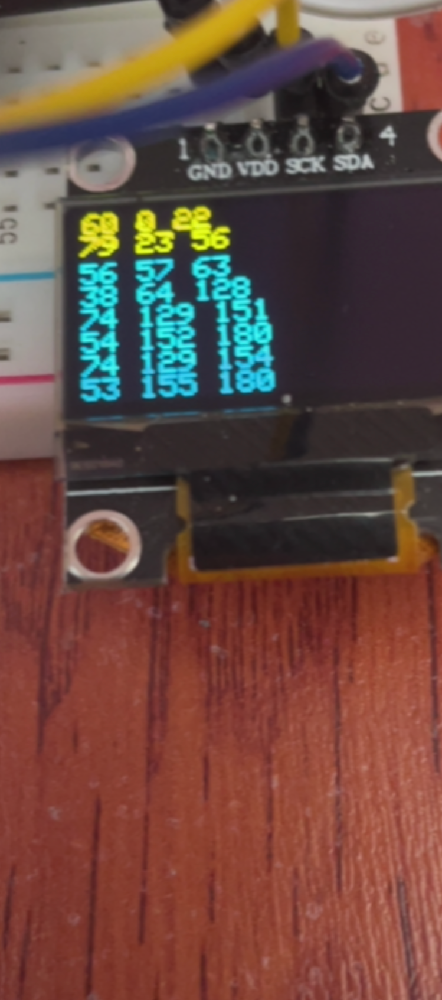

Welcome! I am an Engineering Physics student at the University of British Columbia. My interest is in the combination of electro-mechanical and software engineering and its applications in robotics and space exploration. When I'm not studying, you can find me building contraptions in my little electronics workstation, programming my latest software project, and playing (or making) videogames. During the summers I enjoy long hikes and kayak trips through the wilderness of BC.
Work Experience
Hardware and Frimware Engineer Co-op
Brave Cooperative | Vancouver, BC | Jan 2021 - Apr 2021
Worked with a team of engineers to improve a radar based human detection system that detected and responded to over 100 overdoses.
Technical Projects

Can Retrieval Robot (Summer 2021)
Links
Skills
Result
I collaborated with three other students to design, assemble and test four robots that autonomously navigate on a tape path, collect cans, and drop them off in a silo. The robot chasse was constructed out of corrugated plastic and mounted onto two motors and a caster. Power was supplied by a 12V lithium ion battery and regulated to other components ; electronics were soldered onto protoboards. The firmware was written in C, C++ and Arduino framework and ran on a BluePill board with an STM32 microprocessor. Navigation was accomplished by two infrared sensors and a PID control algorithm. A sonar and a series of servo motors with corrugated plastic arms were used to detect, pickup, and drop-off any cans that the robot detected. Our robots tied for first place in a competition with 15 other teams in which can arrangements were randomized and the robots had to complete an 8ft x 8ft circuit in 1 minute.
Contribution
- Electrical design; designed and assembled prototype servo, H-bridge, sensors, and microprocessor electrical circuits
- Tested and optimized flaws in prototype circuit and drafted final designs
- Firmware programming and debugging
- Improved PID Control by implementing smooth error mapping algorithm
- Developed simulation in python to predict robot performance
- Implemented wireless communication system to efficiently tune robot parameters
Details
This project was done in an engineering project course during the summer of 2021 - in the midst of the pandemic. The fact that the course was online limited the materials and tools at our disposal, and teamwork. Due to some students residing outside of the country, each student was required to build a robot which resulted in my team designing one robot and replicating it four times.
The assessment of the course included a design presentation, a timed trial, and the final competition. Following a "Mars Retrieval" theme in light of the recent rover launch, the competition required the robot to descend into an arena with a sky crane and pickup a samples (cans) and deposit them in a return rocket (card-board silo). The time-limit was 1 minute and the can arrangement was randomized. My team opted to line the arena with a tape path for the robot to follow that maximized the robot's chance to encounter a can. 
Figure 1. Competition surface.
We considered not having a tape path and instead utilize a sonar to detect and map can locations and traverse to these cans.

Figure 2. Testing angular error and detection width on a sonar.
During the planning phase, in order to help quantify design decisions, I programmed python code that simulates, in 2D coordinates, several robot traversal paths as well as the randomized can arrangements. Through this simulation, we acquired a rough estimate of the time it would take to traverse certain paths, and which traversal technique would be more effective. We can to the conclusion that a robot following a pre-determined path, and detecting cans in local proximity would be a better option than long ranged detection. We called this the 'sweep' method.
Figure 3. Snippet of python simulation output in Jupyter notebook.
The mechanical design of the robot consisted of a chasse capable of storing 6 cans horizontally, the cans are stored until it is time to drop them off. The cans are detected with a sonar, collected with an actuated arm, and are lifted to the storage location through another arm; the arms are rotated with servo motors. There are 2 rows of can storage, storing 3 cans each, and directed by an actuated gate at the top.

Figure 4. Robot CAD, created in OnShape.
To test the speed of the motors as well as the navigation, I prototyped the h-bridge and processing circuits as well as a crude cardboard prototype robot. I then implemented a wireless communications system to modify parameters and control the robot on the go. The system utilized an IR receiver and remote as well as binary decoders and was programmed in C++.

Figure 6. H-Bridge (top) and power regulator (bottom) circuit schematics.

Item Economy
A Minecraft plugin developed in Java which allows players to create bank accounts and utilize item based currencies.

Analog to Digital Converter
An electronic circuit that converts analog voltages into binary signals.
AI Virtual World
A virtual world AI simulation with 2D pixel-art developed in Java.

Robotic Claw
A semi-autonomous robotic claw designed to pickup items of different sizes.